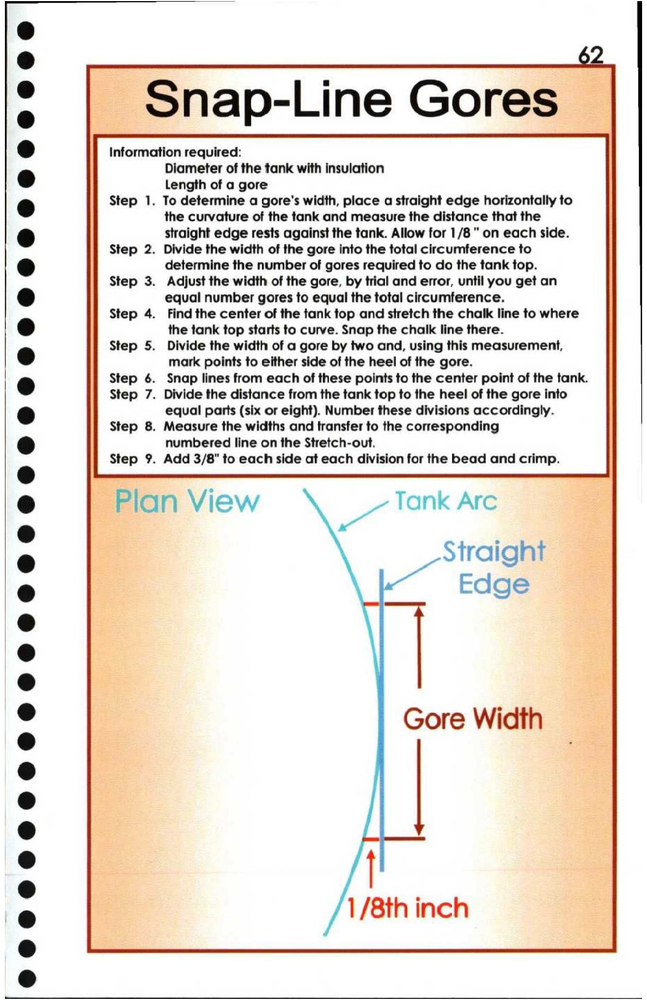

62. Snap-line Gores

fe) 6
onap-Line Gores
i) Information required:
Diameter of the tank with insulation
@ Length of a gore
@ Step 1. To determine a gore's width, place a straight edge horizontally to
the curvature of the tank and measure the distance that the
@ straight edge rests against the tank. Allow for 1/8" on each side.
Step 2. Divide the width of the gore into the total circumference to
@ determine the number of gores required to do the tank top.
Step 3. Adjust the width of the gore, by trial and error, until you get an
@ equal number gores to equal the total circumference.
Step 4. Find the center of the tank top and stretch the chalk line to where
8 the tank top starts to curve. Snap the chalk line there.
Step 5. Divide the width of a gore by two and, using this measurement,
tT ) mark points to either side of the heel of the gore.
8 Step 6. Snap lines from each of these points to the center point of the tank.
Step 7. Divide the distance from the tank top to the heel of the gore into
e@ equal parts (six or eight). Number these divisions accordingly.
Step 8. Measure the widths and transfer to the corresponding
@ numbered line on the Stretch-out.
e Step 9. Add 3/8" to each side at each division for the bead and crimp.
& Plan View ait Tank Arc
e Straight —
= 4
° 7 Edge
3
2 Gore Width —
4 . BP Ss.
e = 1/8th inch =